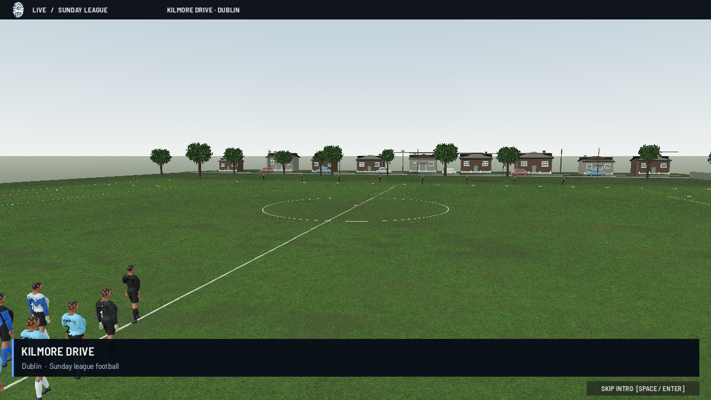
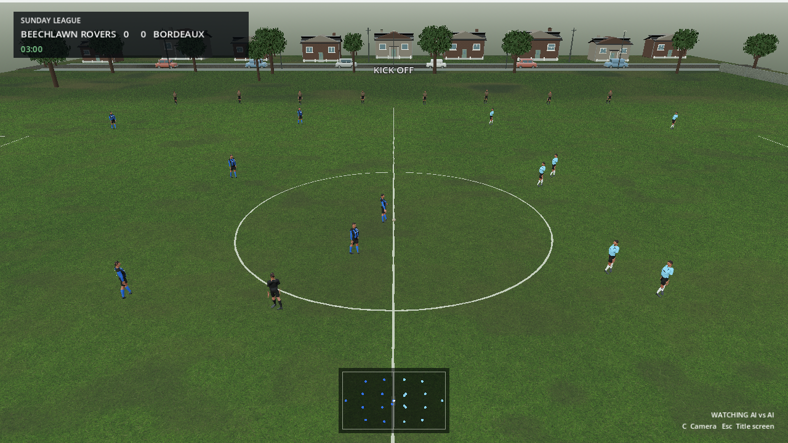
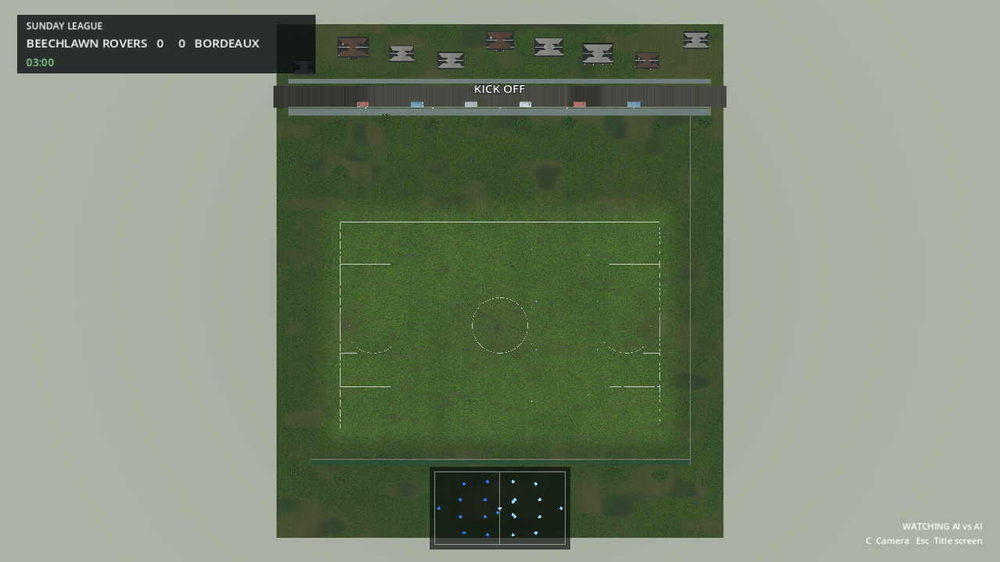
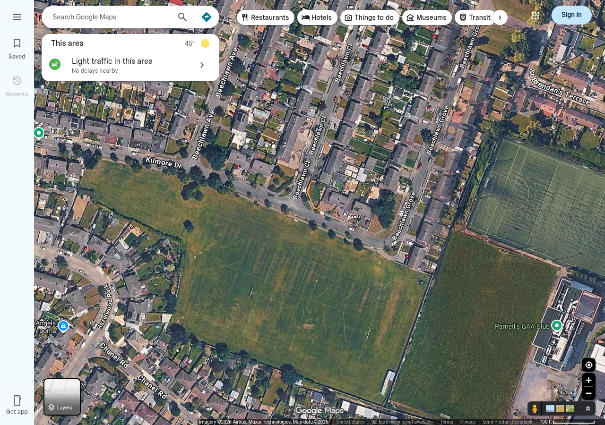
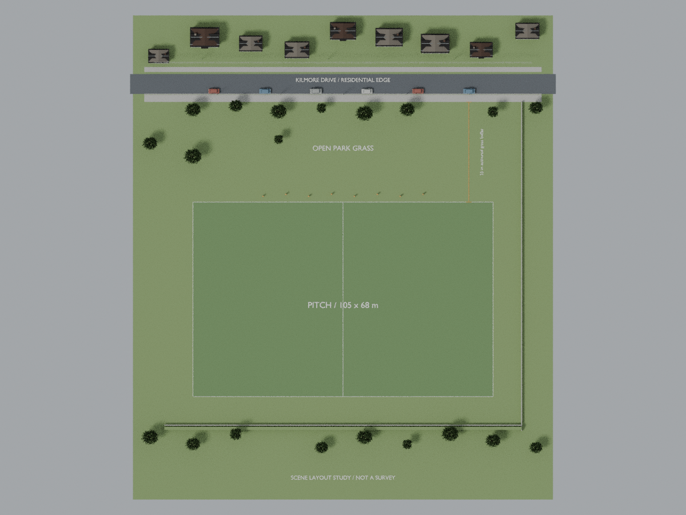
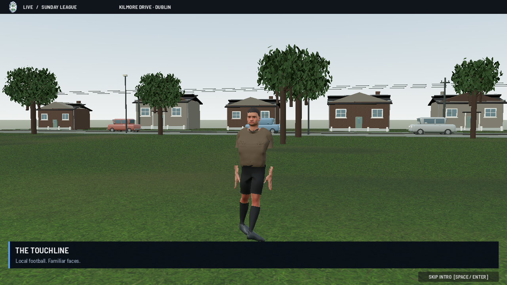

The street now sits beyond a broad grass apron: 35 m to the footpath, 37.75 m to the nearest asphalt edge. These are authored approximations guided by the satellite imagery, not surveyed site measurements. The playable field remains 105 × 68 m; the close broadcast camera is unchanged.






Actual WebGL captures use Chromium software rendering with capture shadows disabled. Tree/house/car art, exact park outline and street bends remain unfinished. This review establishes the corrected spacing, not final venue fidelity or M1 performance.